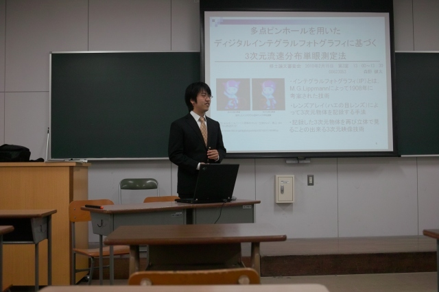

| ・修士論文審査会(H22.02.15) | |||
去年は6人発表で、今年はM野くん、Aザワくんが審査会でした。プレゼンでは、主張するべきトコロは主張して、質疑応答では、答えるべきトコロは答えました？ |
|||
|
K野くん「立ち位置は大事ですよ」 |
Aザワくん「なんか緊張してきた」 | ||
|

M野くん「そろそろ？」 Photo by K(O)梶くん |
村田先生＠主査到着！ Photo by K(O)梶くん | ||
|
M野くん「それでは〜」 Photo by K(O)梶くん |
M野くん＠質疑応答中 Photo by K(O)梶くん | ||
|
Aザワくん「それでは〜」 Photo by K(O)梶くん |
Aザワくん＠質疑応答中 Photo by K(O)梶くん | ||
|
Aザワくん＠シャットダウン Photo by K(O)梶くん |
撤収！ Photo by K(O)梶くん | ||